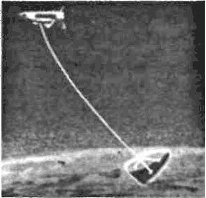

Несинхронный лифт Арцутанова
В 1969 году Юрий Арцутанов понял, что совершенно необязательно привязывать лифт к земной поверхности. Можно так подобрать соотношение орбитального движения и вращения связки двух спутников вокруг центра масс, чтобы в какой-то момент нижний спутник «завис» на короткое время у самой поверхности Земли, забрал груз и затем вывел его на орбиту. Повторно изобретенная в 1975 году американцем Гансом Моравеком, эта система получила название «несинхронный космический лифт».
В упрощенном виде несинхронный лифт выглядит следующим образом. Транспортно-технический центр с помощью тросовой системы захватывает контейнеры с грузами с высот 140–150 километров и подтягивает их к себе. При этом часть контейнеров на промежуточной высоте может быть отсоединена от тросовой системы и переведена на низковысотные орбиты. Подтягиваемые на тросе в центр контейнеры с грузом перегружаются в лифт, двигающийся по тросу вверх от Земли. По мере достижения необходимого удаления от центра контейнеры отделяются для перевода на высокие эллиптические орбиты. Дальнейшее перемещение контейнеров с грузами вдоль троса еще больше увеличивает их линейную скорость. При достижении требуемого значения этой скорости контейнеры отсоединяются от тросовой системы и начинают полет по межпланетным траекториям.
Понятно, что подобная схема подразумевает целый ряд вариантов космической тросовой системы, выбор между которыми осуществляется в зависимости от решаемых задач.
Простейшие тросовые связки довольно быстро нашли применение в реальных космических экспериментах. Для замедления вращения вокруг центра масс с американского спутника «Transit IB» отпускали привязанные грузы (1960 год); корабли «Джемини-11» и «Джемини-12» связывались тросами длиной в 30 метров со специальной ракетной ступенью «Аджена» (1966 год); космонавты и по сей день используют страховочные тросы для выхода в открытый космос.
В 1974 году Джузеппе Коломбо из Смитсонианской астрофизической обсерватории при Гарвардском университете разработал концепцию привязного зонда — небольшого аппарата, спускаемого с орбитального самолета на тросе длиной 100 километров. Расчеты показали реальность технического воплощения замысла, и работа закипела. Первые три полета с привязным субспутником планировались на 1987–1990 годы, но после аварии «Челенджера» программа была отложена на неопределенный срок. Тем не менее эта идея получила развитие. Теперь она выглядит следующим образом.
Орбитальный самолет типа «шаттла» движется на высоте 220 километров грузовым отсеком к Земле. Через приемную штангу трос уходит от него к шаровому зонду до высоты около 120 километров. Сопротивление воздуха отклоняет трос с зондом назад. Ориентация последнего обеспечивается парой аэродинамических стабилизаторов.
Вышеописанная схема позволяет осуществить программу подробного изучения атмосферы на высотах от 50 до 150 километров, ведь этот слой до сих пор остается своеобразной «terra incognita» и метеорологические ракеты лишь чуть приоткрыли ее для нас. Кроме того, с помощью такого зонда в натурных условиях можно изучать аэродинамические характеристики перспективных моделей спускаемых космических аппаратов — недаром описанную систему называют еще «высотной аэродинамической трубой».
Еще один вариант тросовой связки предложил в 1985 году Джон Пирсон. Его схема представляет собой «привязной парус», который спускается с орбитального самолета в верхние слои атмосферы. По замыслу автора, с его помощью можно не только тормозить корабль, возвращающийся на Землю, но и ходить галсами.

Привязной парус Джона Пирсона
С помощью электропроводящих тросов в космосе можно осуществлять в высшей степени интересные эксперименты.
Выглядеть это будет так. Грузовой отсек орбитального самолета открыт. В нем находится лебедка и приемная штанга длиной около 10 метров. Субспутник на тросе выпущен вверх.
Из него в разные стороны выдвинуты электрические датчики. Можно ли пропускать по такому тросу постоянный ток? Казалось бы, нет. Контур не замкнут.
Но ведь он движется в проводящей ионосферной плазме. Ток, текущий по тросу, может замыкаться через окружающую среду.
Для этого на концах троса должны быть установлены специальные контактные устройства. В качестве контакторов предлагается использовать полые катоды. Они хорошо зарекомендовали себя (в расчете на тросовую систему) в диапазоне токов от 0,1 до 40 Ампер.
Конечно, сам трос должен быть покрыт изоляцией, чтобы предотвратить отекание заряда по всей его поверхности. Возникающее в плазме неравновесное распределение заряда породит глобальные ионосферные токи, которые и замкнут электрический контур. В результате получается космическая динамо-машина.
У нее два режима — тяги и генерации. В первом бортовая электроустановка совершает работу против ЭДС индукции, а действующая на трос Амперова сила ускоряет орбитальное движение. В результате производимая на борту электроэнергия переходит в механическую орбитального движения.
В режиме генерации — наоборот. ЭДС совершает полезную работу в бортовой электросистеме, а Амперова сила тормозит орбитальное движение. Электричество на борту вырабатывается из механической энергии орбитального движения.
Геомагнитная индукция относительно невелика. Зато скорость движения — космическая, да и длина троса немалая.
Произведение этих трех величин дает очень большие значения ЭДС индукции. При вполне реальном токе в 10 А мощность тросового генератора достигнет 40 кВт!
Выгодно комбинировать режимы тяги и генерации. При входе в тень Земли солнечные батареи перестают вырабатывать энергию. В этот период можно включить тросовый генератор.
На освещенной стороне можно переключиться в режим тяги и восполнить потери энергии орбитального движения в тени. К. п. д перевода механической энергии в электрическую и обратно при таких операциях оценивается очень высоко — 90–95 %.
С помощью тросов можно образовывать временные связки спутников и изменять их орбиты, передавая без потерь энергию и момент количества движения от одного космического аппарата к другому. Представим, что орбитальный самолет доставил грузы на станцию и собирается возвращаться. В традиционном варианте после расстыковки он должен сжечь и выбросить в пространство изрядное количество топлива. В варианте тросовой связки этот этап выглядит более экономичным. После расстыковки орбитальный самолет остается связанным со станцией. Трос разматывается, и орбитальный самолет под действием сил тяжести уходит вниз, а станция — вверх от общего центра масс. Если теперь эту связку расцепить, то точка расцепки станет для орбитального самолета апогеем (высшей точкой) его новой орбиты, а для станции — перигеем (низшей точкой) новой орбиты. В результате этого маневра, на который не было затрачено ни грамма топлива, орбитальный самолет пойдет на посадку, а станция будет переведена на более высокую орбиту, что очень важно, поскольку станция постепенно теряет высоту из-за аэродинамического торможения.
Через полвитка после расцепки разность высот двух аппаратов, образовавших ранее связку, составит от 7 до 14 длин троса. При длине троса 50 километров это будет 350–700 километров!
Однако можно пойти еще дальше. Не заставлять орбитальный самолет добираться до орбиты станции, а спустить со станции ему навстречу привязной стыковочный узел. После стыковки орбитальный самолет образует со станцией вертикальную связку. Дальше есть два варианта. Либо самолет подтягивается к станции для разгрузки, а затем спускается обратно на тросе и отстыковывается. Либо он оставляет груз на стыковочном узле, который затем поднимается на станцию. В обоих случаях экономится много топлива.
Спутник, доставляемый на орбиту в грузовом отсеке орбитального самолета, может быть затем запущен на более высокую орбиту с помощью троса. В свою очередь, орбитальный самолет при запуске может не сбрасывать, а спускать на тросе отработанный топливный бак, отбирая часть его энергии.
Американские инженеры Пензо и Майер предложили использовать тросы при облете астероидов. По их идее с пролетающего космического аппарата выстреливается гарпун, который внедряется в поверхность астероида. Заякоренный таким образом аппарат разворачивается, обрезает трос и уносит дальше, оставляя гарпун небесному телу на память о своем визите…